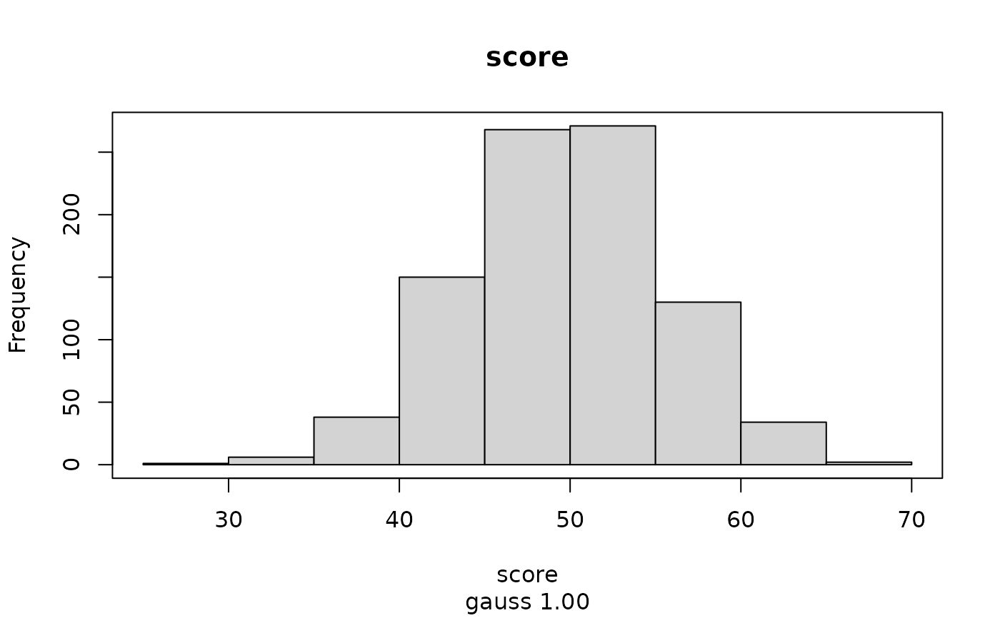
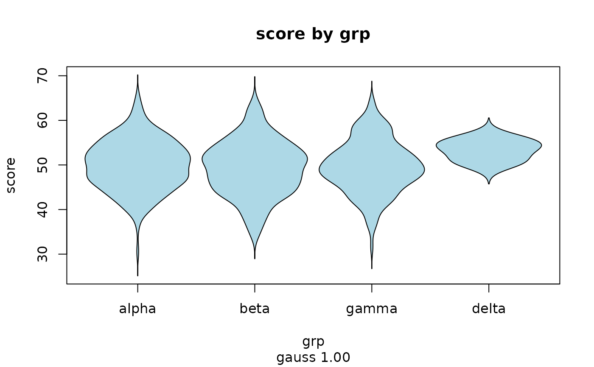
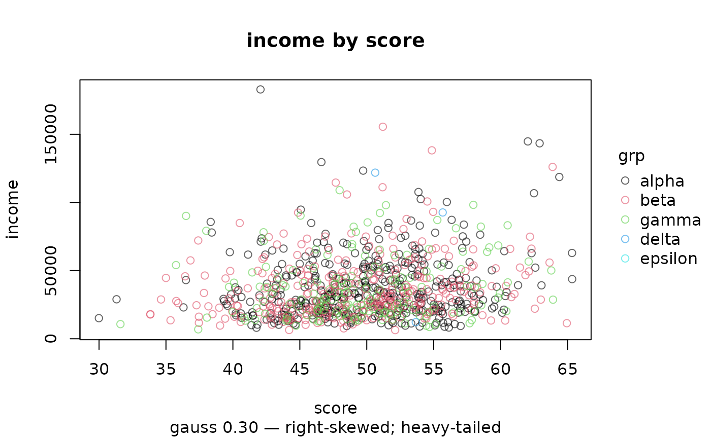

Chooses a plot appropriate to the classes of what you give it, annotates it
with the same diagnostic verdict ilm_describe() reports, and switches to a
binned density when there are too many points to show individually.
Usage
ilm_plot(
data,
x,
y = NULL,
by = NULL,
geom = "auto",
colour = NULL,
color = NULL,
fill = NULL,
alpha = NULL,
size = NULL,
palette = NULL,
theme = NULL,
n_max = 5000L,
max_levels = 20L,
verdict = TRUE,
main = NULL,
...,
pch = NULL
)Arguments
- data
A data frame.
- x
Name of the variable on the horizontal axis.
- y
Optional second variable; required by some geoms.
- by
Optional grouping variable, drawn as colour with a legend.
- geom
"auto"or one of the geoms in the table above.- colour, color
Colour of lines, points and borders. Synonyms; give one.
- fill
Fill colour for bars, boxes, violins and densities.
- alpha
Opacity between 0 (transparent) and 1 (opaque).
- size
Point size for
"point", line or border width elsewhere.- palette
Colours for groups: a vector of colour names, or the name of a palette such as
"Dark 2".- theme
A tinyplot theme name, such as
"clean". With tinyplot 0.7.0 or later the available names are listed bytinyplot::tinytheme_list()and an unknown one is reported here; on earlier versions tinyplot reports it instead.- n_max
Above this many points a scatter becomes a binned density.
- max_levels
Categorical levels beyond this are pooled into
(other).- verdict
Annotate the plot with the diagnostic verdict.
- main
Plot title.
- ...
Passed to
tinyplot::tinyplot().- pch
Plotting character. Takes a NAME as well as a number:
"filled circle"is 16, and every code from 0 to 25 has one. Case, spaces, underscores and hyphens are ignored. A single character is drawn literally, sopch = "x"is still the letter x.
Which arguments each geom needs
geom = "auto" picks from the data. When you name a geom instead, some
require both x and y and some use x alone. ilm_geom_spec() returns
the full table, and it is the same table the argument checks read, so it
cannot drift from the behaviour:
| geom | x | y | size controls |
| histogram | numeric | not used | border width |
| density | numeric | not used | line width |
| bar | categorical or logical | not used | border width |
| box | categorical or numeric | required | line width |
| violin | categorical or numeric | required | line width |
| point | numeric | required numeric | point size |
| bin2d | numeric | required numeric | not used |
| line | time or numeric | required | line width |
| spine | categorical | required categorical | border width |
See also
ilm_geom_spec(), ilm_pick_geom(), ilm_plot_all(),
illume::ilm_plot_model().
Examples
d <- ilm_sim()
ilm_plot(d, "score")
#> ilm_plot: gauss 1.00

ilm_plot(d, "grp", "score", geom = "violin", fill = "lightblue")
#> ilm_plot: gauss 1.00

ilm_plot(d, "score", "income", by = "grp", alpha = 0.6)
#> ilm_plot: gauss 0.30 — right-skewed; heavy-tailed
